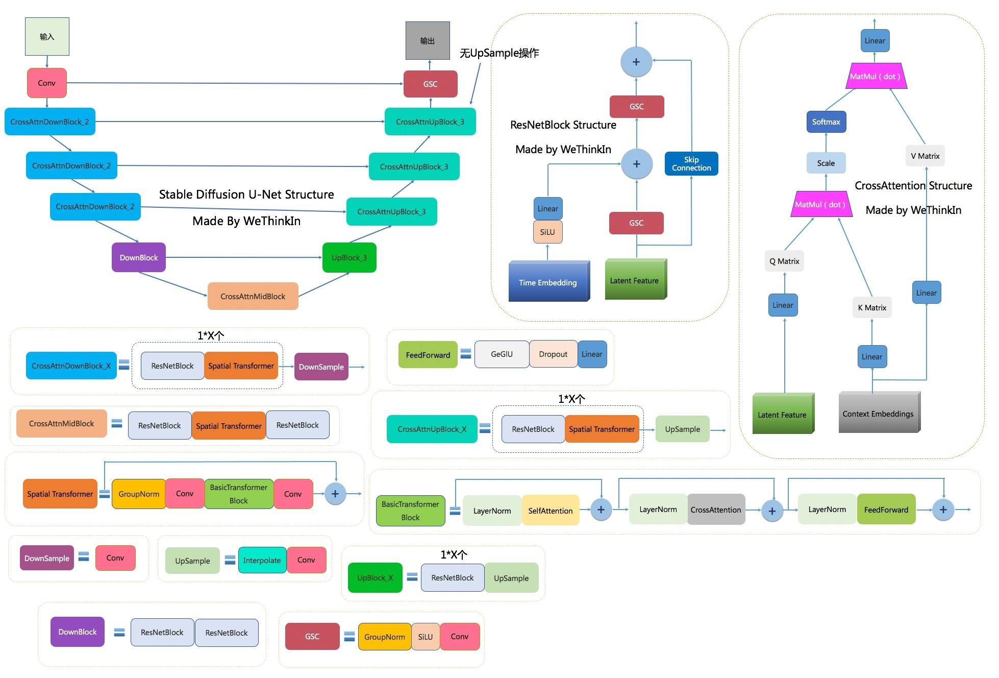

Video Diffusion Models
阅读时间：2023-11-10
阅读目的：在图像生成领域，学者在SD架构的基础上，通过研究Cross-attention，Self-attention等模块，诞生了很多图像编辑算法。VDM在2022-04提出，现在是各种大规模视频生成模型的主流架构。因此，想要在现在的开源大模型基础上做些什么，必须要对最基础的架构有了解
Introduction
扩散模型很有用，但是没办法用在视频生成领域，因此论文提出一种扩展Unet模型的方法，让Unet可以时序建模，应用在视频生成领域
Background
写了扩散模型的推导过程
Method
结构很简单，就是w 一个Unet结构
常规部分：
- 先进行空间下采样（spatial downsampling），再进行空间上采样（spatial upsampling）
- 在每一层空间上通过跳跃连接（skip connections）在上采样时同步下采样过程的特征图
- 为了引入文本这类的条件信息，每个2D卷积残差块后面还跟着一个注意块或者说空间注意块（spatial attention block）和交叉注意力块（cross-attention block）
总结Unet的零件结构如下图：
如果要细致解析Unet或学习它在AIGC领域的作用，可以看以下两篇博客：
深入浅出完整解析Stable Diffusion中U-Net的前世今生与核心知识 - 知乎 (zhihu.com)
深入浅出完整解析Stable Diffusion（SD）核心基础知识 - 知乎 (zhihu.com)
改变的部分：
- 将原UNet中的2D卷积替换成了space-only 3D卷积（space-only 3D convolution），举例来说，如果原来用的是3x3卷积，那么现在就要把它替换为1x3x3卷积（其中第一个维度对应视频帧，即时间维度，第二个和第三个维度对应帧高和帧宽，即空间维度
- 空间注意块仍然保留，但只针对空间维度进行注意力操作，也就是把时间维度flatten为batch维度。即[B, T, C, H, W] -> [B * T, C, H, W]
- 在每个空间注意块后面，新插入一个时间注意块（temporal attention block），在第一个维度即时间维度上执行注意力，并将空间维度flatten为batch维度。
- 在每个时间注意力块中使用相对位置嵌入（relative position embeddings），以便让网络能够不依赖具体的视频帧时间也能够区分视频帧的顺序（Swin Transformer之相对位置编码详解 (zhihu.com)）
这种时空分离注意力有一个好处是可以对视频和图片生成进行联合建模训练。就是说可以在每个视频的最后一帧后面添加随机的多张图片，然后通过掩码的方式来将视频以及各图片进行隔离（比如填充0），从而让视频和图片生成能够联合训练起来
我的看法
VDM带来的贡献：
- 时空分离注意力可以对视频和图片生成进行联合建模训练
截止2023-11-10，数据集一直是文本视频模型研究钟面临的一个重大问题。因此在大模型训练时需要辅以大量的文本图片对来学习语义信息。 - 原本SD对应的Unet架构很有潜力，在此基础上进行微调，就可以得到一个视频生成模型
Video Diffusion Models
http://example.com/2023/11/10/Video-Diffusion-Models/